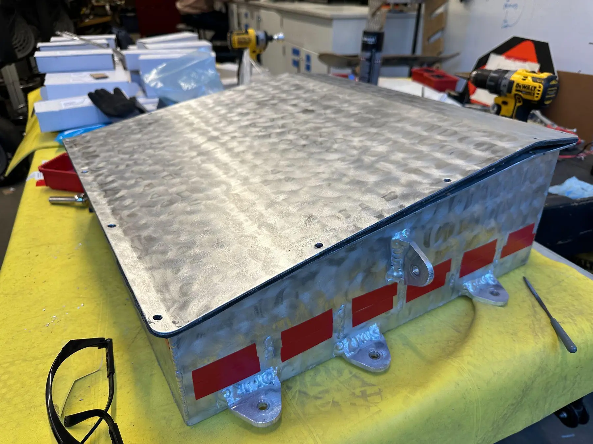

352.8 V tractive accumulator
Aztec Electric Racing's first high-voltage traction battery, researched, packaged, fabricated, wired and documented around Formula SAE requirements. It passed structural inspection, a first for the team.

Start with the inspection envelope, not the cell count.
A Formula SAE accumulator is a structural enclosure, a high-voltage assembly, a low-voltage controls package and a serviceable competition part at once. The design began by turning the rules and the vehicle’s needs into three objectives: reduce enclosure mass and center-of-gravity height, clean up controls packaging for manufacturing and service, and produce a rules-compliant battery that can pass technical inspection.
The 2025 Energy Storage Design Report is the source for this page. It was written to keep the interfaces between those goals visible: mechanical choices change insulation and wiring space, segment voltage changes service procedures, and board placement changes harness length and lid clearance. It also gives later teams a reference for design, fabrication and validation.
Lead the subsystem, document it for the next team.
I led energy storage as Energy Storage Team Lead while serving as team President. The work crossed mechanical, electrical and controls boundaries, and I treated it as one project rather than three. I also developed documentation and validation standards for future subsystem designs.
Responsibilities
- Led a 250+ member FSAE electric team across project management, operations and budget planning.
- Established the team's first operations framework for competition requirements, sponsorship outreach, safety and recruitment.
- Researched, designed and fabricated the team's first high-voltage tractive battery, with controls integration.
- Passed accumulator structural inspection for the first time in team history.
- Built and iterated the team's first powertrain testbench, with cooling-loop and wiring-harness integration.
- Developed documentation and validation standards for future subsystem design and manufacturing.
Use structure to solve mass, sealing and service access together.
The shell holds the cells, controls boards and protection devices, with five internal walls that create six segments. The team chose 6061 aluminum for strength, weldability and mass. Against the outgoing steel container, the report estimates the aluminum shell alone at roughly 30% lighter.
Low-profile mounting tabs shrink the footprint and are designed around 40g lateral and 20g normal load cases. Unnecessary wall perforations were removed from the exterior. The aluminum lid follows the container’s slope of about 7.8 degrees, so water doesn’t collect on it.
Fourteen #6-32 fasteners sit around bends and edges and compress a quarter-inch, 60-durometer polyurethane gasket. Fastener spacing, lid stiffness and gasket compression work together to make the seal consistent.
Carry the CAD into datums, welds and repeatable internal geometry.
Fabrication sets the accuracy of everything that follows. The shell panels, internal walls, mounting tabs and lid interface had to hold alignment through cutting, fixturing and welding. Distortion at this stage would turn into misaligned segment guides, uneven gasket compression and maintenance-plug tolerance problems later.
The build moved from the external shell to the five internal partitions and guide features before any electrical hardware went in. Fit checks kept the segment channels square and preserved working clearance along the low-voltage region.
Keep the pack serviceable before it ever becomes high voltage.
Nomex 410 lines the conductive shell and lid. Overlap and edge treatment matter because a nominally insulated panel can still expose metal at a seam, corner or fastener. Above the segment stack, interlocking FR-4 sheets form a secondary plane between the high-voltage cells and the low-voltage controls.
Eighty-four Energus Li2x4p25RT packs are divided into six series segments of fourteen packs each. Until the maintenance plug is installed, each segment stays limited to 58.8 V maximum. Once it is connected, the complete pack reaches 302.4 V nominal and 352.8 V maximum.
Copper busbars join the segments. M8.8 fasteners are tightened to the report’s 10 N·m requirement, and double-tab washers lock them against vibration. This pack format also brings factory cell-level fusing, integrated sensing, protected cells, threaded copper-plated terminals and a compact 2×4 layout that suits a single-layer enclosure.
Each busbar joint is torqued to the report’s requirement and locked with double-tab washers against vibration.
Make the pack’s safety state visible and controllable.
The low-voltage system decides whether the battery can operate safely. Custom Battery Monitoring System and Voltage Monitoring System boards feed a central accumulator PCB that also handles precharge, shutdown, DC-DC, the 60 V trigger and the Accumulator Indicator Light. External Deutsch connectors link this local package to the vehicle’s master harness.
Consolidating those functions on one board reduces point-to-point wiring, shortens signal paths and gives troubleshooting a clear physical reference. It also keeps high-voltage switching logic, indicator behavior and BMS communication above the isolated cell plane instead of spread around the enclosure.
In the assembled pack the controls layer sits above the cell plane, with the monitoring boards, routed wiring and high-voltage connections visible.
Use a physical interface to define the energized state.
The maintenance plug bridges the six isolated segments into the full 352.8 V series pack. Removed, the highest available segment voltage is 58.8 V. Installed, its copper links complete the tractive-system path. The plug is a safety boundary, not just a connector.
A one-piece bar would inherit the accumulated positional error across all six segment interfaces. The design uses independent capsules held by a common handle instead. Each capsule carries a solid copper link with press-fit female Amphenol connectors, so local movement absorbs tolerance stack while the operator still makes a single action.
Unique extrusions and matching cutouts key the assembly against incorrect orientation. Once the lid is fastened it retains the handle, which locks the plug against loosening in service.
Design the equipment around the battery, too.
The team also built a charge cart so the accumulator could be handled, serviced and charged outside the chassis. A commercial 2,000-pound flat cart is the base. A welded, hip-height work surface improves access, and a shelf and drawer keep electrical tools with the pack.
The electrical side combines the charger, auxiliary power, grounding, protected inlets and covered outlets in a transportable setup. The report documents a later 220 V charging option added to shorten turnaround between test cycles. A mechanical dead-man brake, built from opposing wheel chocks, springs and bicycle-brake controls, makes the cart’s default unattended state stopped.
Build an inspectable system, not a sealed mystery.
Final integration joined the enclosure, insulation, segments, maintenance plug, contactors, fuse, controls boards, indicator light, external connectors and lid into one inspectable assembly. The documentation records design intent, key hardware values, the manufacturing sequence, and the questions an inspector or future subsystem lead would ask.
The accumulator passed structural inspection, the first successful pass in team history. It showed that a first-generation high-voltage system could be built, presented and accepted against competition requirements.
The finished pack at a team event: the same hardware the report describes, presented as documented team equipment.